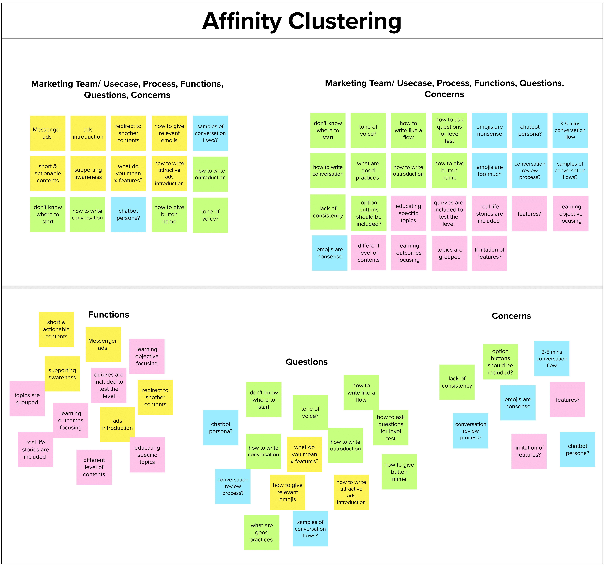

Introduction
This case-study was based on the experience on enhancing the efficiency of working teams while designing and developing of Conversation Based Learning Management
System.
This product was initaited in Myanmar Youth Empowerment Opportunities (MYEO) which is one of leading
organizations in Myanmar's Digital Transformation.
In 2019, Chatbot Based Learning Management System has been launched . The working team’s efficiency has been increased from 10% into 40% due to tailor-made flow templates and an efficient manual.
I was a part of a metric-driven team which positively impact to learning experience through the conversational way.
[To comply with my non-disclosure agreement, I have omitted and obfuscated confidential information in this case study. All information in this case study is my own and does not necessarily reflect the views of Myanmar Youth Empowerment opportunities (MYEO).]
The Problem
Our goal is to build an effective and accessible learning system that can enhance youths’ learning experience via bite-sized contents with the minimum effort. There is lack of proficiency and efficiency for conversational writing in a team in order to deliver quality contents to achieve that goal.
The Solution
We want to create effective manual and multiple conversation architecture flows which are fitted-into based on learning objectives and outcomes while educating the working team members with intellectually tangible ways.
I started it with the first stage of design thinking process “empathize” in order to understand the conversation scope and approach the problems with human-centered and design thinking methods iteratively throughout the process. It includes different methods such as
Enthographic Interview, A/B Testing, Quantitative Analysis, Market Research, Usability Testing and Participatory Designing.
I was a lead conversation strategic designer who is also the communication medium of the development team, content teams and marketing team so that I could achieve the smooth user experience from the beginning of the journey to end . I collaborated with two developers, a graphic designer, 6 content team members and 4 marketing team members.
My description in the role were:
- Develop human-centered and data-driven product and conversation design in chatbot
- Improve users’ experience with miscellaneous research methodologies
- Take responsibility of design trade-off backed by qualitative and quantitative data
- Create design concepts and drawings to determine the best product
- Present product ideas to relevant team members for brainstorming
- Suggest improvements to design and performance to product developers
- Lead the conversation strategy, user experience and build alignment with a variety of stakeholders across the organization
- Identify critical content issues and work with cross-functional partners to proactively drive improvements forward
- Lead in user testing and synthesize findings into delightful user experiences
- Create conversational workflows and strategies based on user feedback, research, and data
- Work closely with the content and design teams to build exceptional user experiences
- Design sketches, flow diagrams, wireframing, and prototypes
My ultimate goals for the product were to:
- Design the conversational architecture flows which are fitted-into the learning objective and outcomes
- Educate the working team members as simply as possible with effective documentations and instructions
I started with empathy as below:
| In order to understand, | I did |
|---|---|
| Technical Limitation on the platform | Read roughly the technical documentation |
| Better conversational structure in a flow | Reflect insights from previously conducted analysis.
Research similar message-based applications such as wysa, dualingo, woebot and etc. |
| Current Funationality, Process of how other teams are connecting with learners via conversation | Enthographic Interview and Co-creating session |
In the define stage, I mostly used wording maps such as a feature map and insight map.
- Through reflecting insights from analysis, I could came to conclusion of
a Feature Map
which includes the definition of features. That map also scopes the features we will be using based on technical limitation and conducted analysis.

Conversation Feature Map - Through ethnographic interview and co-creating session, I conclude with
an Affinity Clustering(which I called the insight map)
which includes the current funtionality, process and concerns/questions/suggestion where they are stuck in.

Affinity Clustering
Based on the research of similar message-based applications, I could find the common pattern of
- how to continue the conversation in a flow
- how long a conversation flow should be
“... how might we make the replaceable conversational flow which can be used for all functionalities users use?... ”
Based on the process which users are using, I framed the conversation flow into two parts: Ads Intro Session and Main Conversation Flow.
Under Main Conversation Flow, there will be three sorts of flow which is directly based on learning objective and outcomes.
- Topic-focused Teaching One teaching method based on the specific topic. For example: Google Drive Lecture, Cyber Secuirty Protocol Lectures.
- Skills-filtered Teaching One teaching method based on student’s knowledge level on specific topic. Hence, this type usually includes with quizzes before lectures. For example: Google Drive (Basic), Google Drive (Intermediate), Cyber Security Protocol (Intermediate)
- Story-based Teaching One teaching method based on stories and case studies. For example: How a student can use Google Drive for productivity (real life story based)
Here, there is a question which is struck in my mind based on enthographic interview
“... where and how should user start the conversation? ... ”
The pre-checlist questionaries are
- Is the content intended for ads purpose? (Yes/No)
- Will the content include the quizzes which can filter users’ knowledge on specific skills? (Yes/No)
- Is the content displayed with story? (Yes/No)
In accordance with my non-disclosure agreement, I just made the sample demo in order to grapse what and how it looks like: Try the demo with
this Conversation Flow Generator.
Besides, with the mentoring from my supervisor, he and I came up with the conversational fundamental principles which can be helpful to create better conversational flow. After I have created the conversation flow templates, I double checked with the principles whether the flows meet with them.
“... how can I make the accessible learning of conversation architecture flows to users without the need of me in future? ... ”
After finishing the conversation architecture flow templates, it is the time to write the manual which can effectively guide users for exactly what they want to find.
I read the book called
“Developing Quality Technical Information: A Handbook for Writers and Editors”
and research about how good manual looks like such as reasearching git manual and other gitlab manual.
Form the research and reading, I conclude with three main features how to start the manual:
- Simplicity: Easy to understand and use less technical words but write with simple words
- Searchable: Easy to find what users want
- Visual Effective: Easy to absorb information visually
As a overall of documentation, it includes
- Where and how to start the conversation with components
- How to write the conversation(writing guideline)
- How to give the button name
- How to make the educational contents accessible
- How to give reviewing conversation templates
- Chatbot Persona
- Feature Map
- General Principles and Rules
- Metrics of Good Conversation
- Inspirational Sample Conversation Templates
- Retrospective Feedbacks to learn from others' mistakes
High Fidelity Prototype can be tested with
A Bite-sized Conversational Lecture Link
and it was done with figma.
Actually, this is not all. I update the conversation architecture flows over times with the iterative usability testing and A/B testing of the flows. Based on testing and analysis, the conversation flows have been improved with gradual better learning experience to learners.
The restructuring of conversation architecture flow with tailor-made templates could enhance the working team’s productivity and thus, revenue has been increased over time while enhancing learning experience with bite-size courses.
Working Team’s (Users’) Efficiency increased by triple
Very First Manual & Ready-to-replace-flow-templates for conversational writing has been released in the workplace
Hence, revenue for repeatative projects could be enhanced to 60%
- I could learn how to write the documentation in an effective and efficient ways.
- The less I talked with users = The less tendency I can fullfill to users’ needs
- Simplicity is one of the best characteristics in communication of regardless of communication means such as verbal or non-verbal.
- It is not enough just to start and finish the documentation. It needs to be improved over time.
- Better and Best ideas will not come from just one but they will come from groups (co-design sessions).